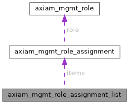

|
AXIAM C SDK 1.0.0-beta11
C11 client SDK for AXIAM (CONTRACT.md §1-§7, §9-§11, §13 incl. §6.1 mTLS)
|
A plain list of RoleAssignment objects. More...
#include <management_models.h>

Data Fields | |
| axiam_mgmt_role_assignment_t ** | items |
| Every item the server returned. | |
| size_t | count |
| How many. | |
A plain list of RoleAssignment objects.
This is what a BARE-ARRAY endpoint returns. 27.4 rule 4 is explicit that such a response MUST NOT be modelled as a page: there is no total, no offset and no next page, and dressing it as one would invite a caller to walk something that has already ended.
| axiam_mgmt_role_assignment_t** axiam_mgmt_role_assignment_list::items |
Every item the server returned.
| size_t axiam_mgmt_role_assignment_list::count |
How many.